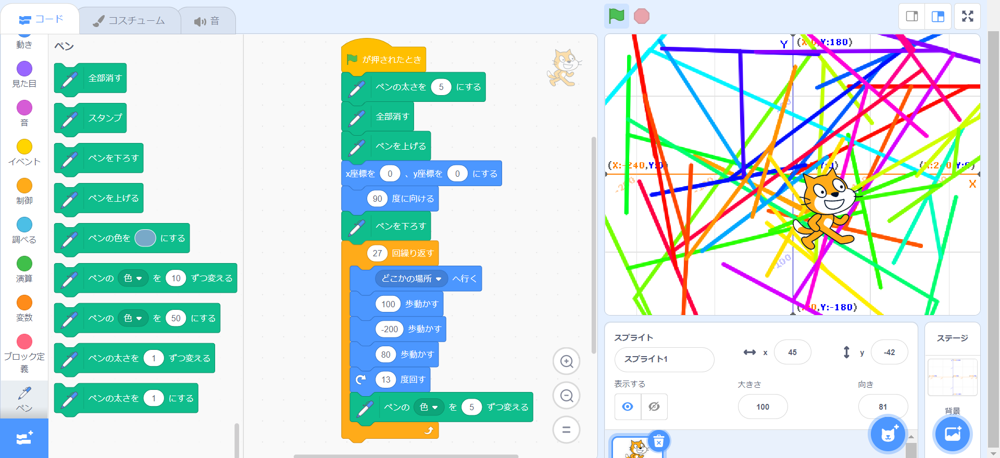
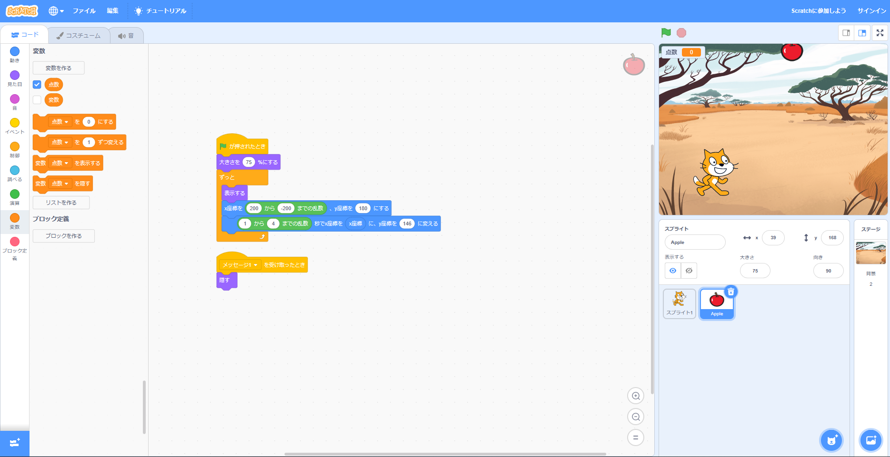

1週目のレポート ： 公大高専１年実習I-1
2b班32番 廣海 功航
第1週目
1-1 サイエンスアート

1.内容
スクラッチを使って線を書くプログラムを構成させて、スクラッチのキャラクターであるcatを動作させながらそれに沿って線を描くことに成功した。く。
2.感想
スクラッチでは何度かゲームを作成した経験があるので、スムーズにブロックを構成させることができたが、ペンなどの使うことが少ないプログラムを使用しなければいけない場面では、 少しだけ戸惑った。
1-2 ゲーム

1.内容
先程と異なってメッセージを使用し、リンゴと猫を連動支えることにより複雑で難易度が高いプログラムであるリンゴが落ちてくるゲームを作成した。 また、変数を使用することによってよりゲームらしさを出した。
2.感想
変数やメッセージなどは容易に使用することができて簡単だったが、猫をジャンプするプログラムの内容がが全く理解できないうえにうまく動作しなくて、 最終的にインターネットを参考にしてやっと完成させることができたが、かなり難しかった。
1-3 ホームページ作成
私のホームページ
1.内容
githubというプログラムを作成できるサイトを使用して、配布されたプログラムに文字を入力してホームページを作成する。
2.感想
正直全く理解できなかった。主な理由として、スクラッチとは異なってすべて英語で記入されているため、どこに何が書いているのかもわからなかった。 また、プログラムに書き込むところも、配布されたプログラムに(ないよう)と記入されていてわかったが、この示しがなければ全くわからなかった。